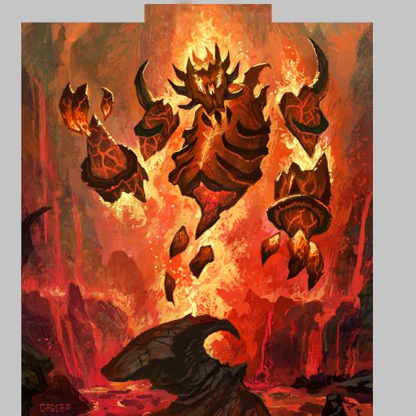
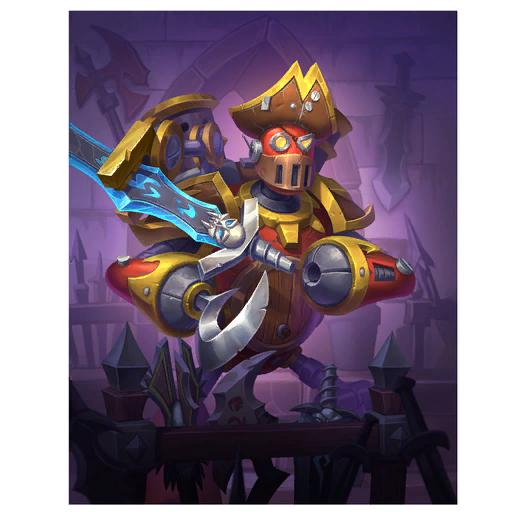
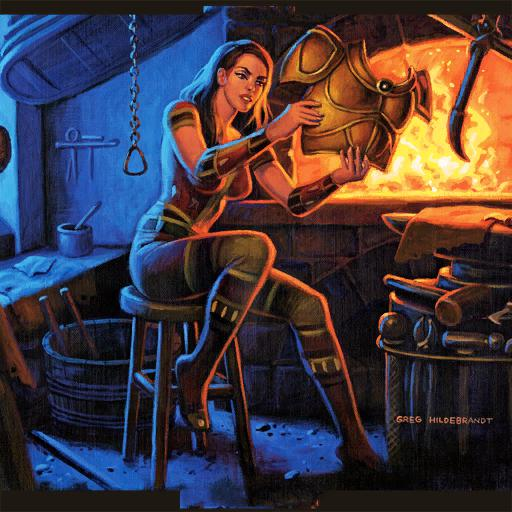
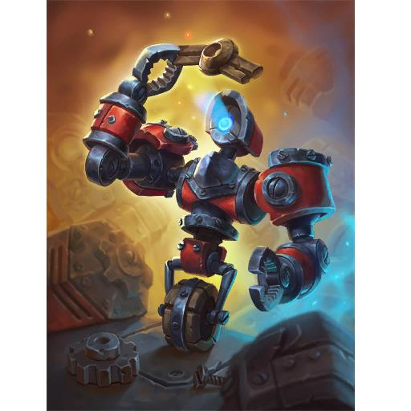

I want to DIY a new Rager meme card inspired by Magma Rager's classic 3-mana 5/1 statline, but make it feel like a defensive Control Warrior card that gains Armor. Keep it simple and plausible, like something Hearthstone players would actually design.
{
"query_id": "diy_rager_meme_en",
"text": "I want to DIY a new Rager meme card inspired by Magma Rager's classic 3-mana 5/1 statline, but make it feel like a defensive Control Warrior card that gains Armor. Keep it simple and plausible, like something Hearthstone players would actually design.",
"classes": [
"Warrior"
],
"card_types": [
"Minion"
],
"keywords": [
"Rager",
"Armor"
],
"actions": [
"gain_armor"
],
"targets": [],
"resources": [
"3"
],
"spell_schools": [],
"minion_types": [],
"mechanic_tags": [
"Rager"
],
"constraints": [
"5/1 statline inspired by Magma Rager",
"defensive Control Warrior theme",
"armor gain",
"simple and plausible meme design"
],
"generated_roles": [
"Control Warrior defensive minion",
"Rager meme card"
],
"generated_card_names": [],
"related_card_names": [
"Magma Rager",
"Rager"
],
"triggers": [],
"conditions": [],
"generation_hints": {
"visual_tags": [
"warrior aesthetic",
"armor theme",
"elemental reminiscent",
"simple meme-style design"
]
}
}
family/statline anchor: classic 3-mana 5/1 Rager meme
CS2_118 / dbf 1653
mechanic anchor: Warrior minion that gains Armor
NX2_028 / dbf 86692
class identity: iconic Warrior Armor synergy
EX1_402 / dbf 596
defensive Warrior flavor: armored mech/minion reference
BOT_059 / dbf 48691{
"card": {
"name": "Iron Rager",
"mana_cost": 3,
"card_type": "Minion",
"class": [
"Warrior"
],
"rarity": "Common",
"minion_type": "Elemental",
"attack": 5,
"health": 1,
"durability": null,
"keywords": [
"Battlecry"
],
"rules_text": "Battlecry: Gain 3 Armor.",
"flavor_text": "Molten fury tempered by iron will."
},
"structured_semantics": {
"actions": [
"gain_armor"
],
"mechanic_tags": [
"battlecry",
"gain_armor"
],
"constraints": [
"5/1 statline inspired by Magma Rager",
"defensive Control Warrior theme",
"armor gain",
"simple and plausible meme design"
],
"related_card_refs": [
"Magma Rager",
"Hookfist-3000"
],
"semantic_summary": "A 3-mana 5/1 Warrior Elemental that grants 3 Armor on play, echoing the classic Rager meme while providing defensive utility.",
"lora_caption": "Hearthstone card art, a burly elemental rager forged from molten rock and clad in iron armor, Warrior class, glowing embers and metallic plates."
},
"kg_usage": {
"retrieved_cards_used": [
{
"card_id": 1653,
"name": "Magma Rager",
"used_for": "statline/meme family"
},
{
"card_id": 86692,
"name": "Hookfist-3000",
"used_for": "armor gain mechanic"
}
],
"design_rationale": "Kept the iconic 5/1 statline from Magma Rager to preserve the Rager meme, and added a simple Battlecry armor gain similar to Hookfist-3000 to give the card a defensive Control Warrior feel without power creep."
},
"balance_notes": "The 5/1 body is vulnerable but high-attack, and a 3 Armor battlecry is a modest defensive upside comparable to other 3-cost Warrior armor cards, keeping the card balanced for constructed play."
}